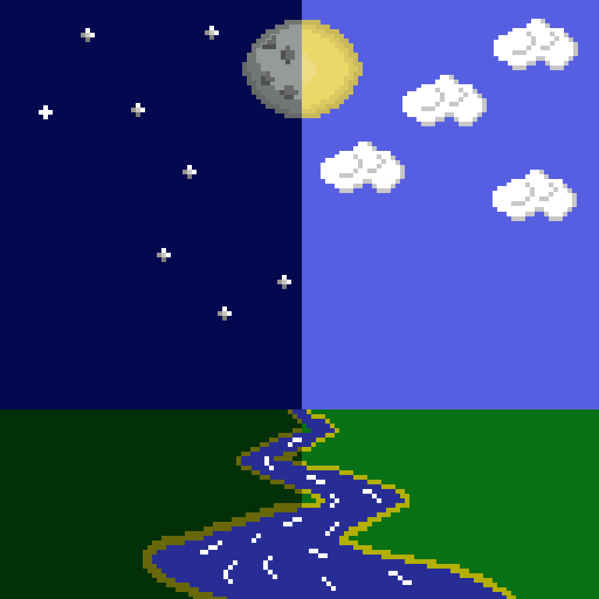

Ночь/День
Опубликовано: 22.07.2025

На холсте застыл миг вечного спора день и ночь, солнце и луна, свет и тьма.
Между ними река, как лезвие, разрезающее мир на двое.
Кто решил, что должно быть именно так? Кто провёл эту черту?
И что скрывается в глубине вод, куда смотрят и золото дня, и серебро ночи?
______